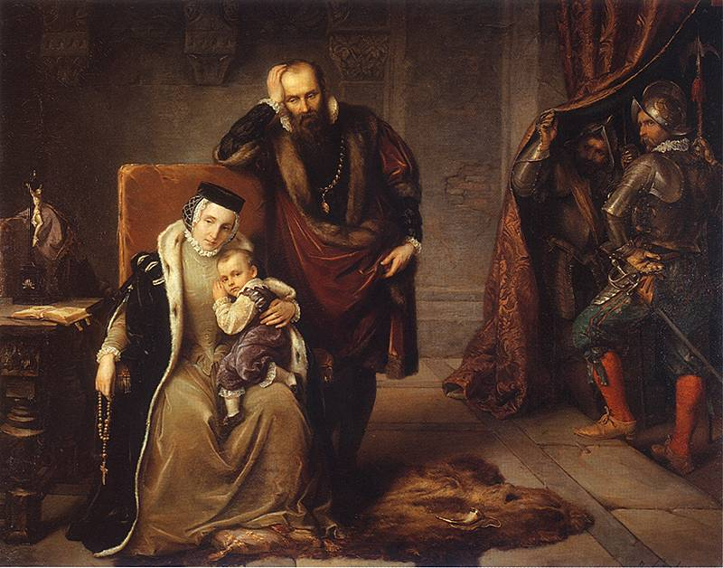

Rodzice Zygmunta: książę Finlandii Jan, późniejszy król Szwecji Jan III Waza oraz królewna polska Katarzyna Jagiellonka zawarli związek małżeński 4 października 1562 r. w Wilnie. Po ślubie zamieszkali w Turku, gdzie prowadzili własny dwór.
12 sierpnia 1563 r. król Szwecji Eryk XIV najechał na Turku i uwięził parę książęcą w zamku Gripsholm, niedaleko Sztokholmu. Katarzynie Jagiellonce zaproponował wolność, jednak nie opuściła męża. 20 czerwca 1566 r. w Gripsholm urodziła Zygmunta.
Wiosną 1569 r. rodzice Zygmunta, Jan III Waza i Katarzyna Jagiellonka, zostali koronowani na króla i królową Szwecji.
